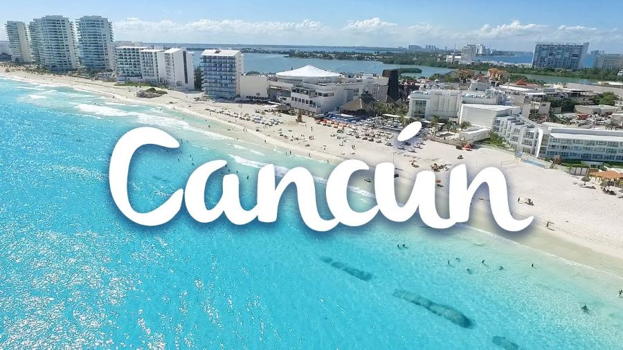

VISITA NUESTRAS PLAYAS
Disfuta de todas las comodidades de nuestros hoteles, deja las preocupaciones a un lado y diviertete con las grandes atracciones del lugar. Ven con toda tu familia a estas hermosa, calurosa y maravillosas playas que estan dentro de nuestra Ciudad de México, recuerda que es importante es divertirte y pasarla al maximo.
PLAYAS QUE PODRAS VISITAR
Cancun

Cabo San Lucas es una ciudad localizada en la punta de la península de Baja California Sur que, además de ser escenario de hermosos paisajes desérticos y playas, también es un destino popular, mundialmente conocido como la Capital del Marlín y hogar del Arco, donde se encuentran el Mar de Cortés y el Océano Pacífico.
Es reconocido en todo el mundo por sus espectaculares playas de arena blanca y su fascinante mar en tonos azul turquesa. Con lugares naturales únicos, cultura maya, actividades acuáticas y de aventura. Gastronomía internacional, espectaculares campos de golf, sofisticadas instalaciones de spas; exclusivos centros comerciales, mercados típicos de artesanías así como espectáculos, bares y centros nocturnos que dan fama a su incomparable vida nocturna.
Asi como tambien encontraras diversas playas dentros de la zona hotelera de Cancun como:
*Las Perlas – (Distintivo Blue Flag)
*Playa Langosta
*Playa Tortugas
*Playa Caracol
*Playa Gaviota Azul
*Chac Mool - (Distintivo Blue Flag)
*Marlín - (Distintivo Blue Flag)
*Ballenas - (Distintivo Blue Flag)
*Delfines - (Distintivo Blue Flag)
*Coral - (Distintivo Blue Flag) (Pet Friendly)
*El Niño - (Distintivo Blue Flag)
Asi como tambien te ofrecemos un hotel con todo pagado en donde tu podras elegir el que mas te agrede, siempre teniendo que todos ellos con el sello de la calidez en el servicio y la reconocida hospitalidad mexicana.
En cualquiera de los hoteles con un precio de $2500 por 2 noches.
Al hospedarte en estos hoteles, tu única preocupación será descansar y dejarte consentir.
Cabo San Lucas

Los Cabos San Lucas esta ubicado en la punta de Baja California Sur, Los Cabos está aproximadamente a 1,609 kilómetros al sur de San Diego y justo al sur del Trópico de Cáncer. Los Cabos se refiere a las ciudades de Cabo San Lucas y San José del Cabo, que se extienden hacia el este, en La Paz, y al norte a Todos Santos.
Reconocido por su belleza natural, Los Cabos es un destino de clase mundial compuesto de hermosos paisajes desérticos y tropicales. Ofrece hoteles de lujo, playas galardonadas, buen clima durante todo el año y cocina de renombre a nivel internacional con chefs poseedores de estrellas Michelin. Hogar del icónico Arco, donde se encuentran el Mar de Cortés y el Océano Pacífico.
Asi como tambien te ofrecemos un hotel con todo pagado en donde tu podras elegir el que mas te agrede, siempre teniendo que todos ellos con el sello de la calidez en el servicio y la reconocida hospitalidad mexicana.
En cualquiera de los hoteles con un precio de $3900 por 3 noches.
Al hospedarte en estos hoteles, tu única preocupación será descansar y dejarte consentir.
Playa Del Carmen

Playa del Carmen se encuentra al norte de la península de Yucatán, a apenas 70 kilómetros de Cancún. La isla de Cozumel, a solo 18 kilómetros frente a la costa, es el lugar perfecto para desconectar y practicar submarinismo. Igualmente, también es posible visitar las exóticas playas de Tulum, situadas a 65 kilómetros.
Reconocido ya que es el corazón de una de las zonas turísticas más importantes de México, la Riviera Maya, siendo el destino más reconocido por ser una ciudad pintoresca que conecta a conocidos parques de la selva tropical y está rodeada del mar Caribe que la hacen tener las mejores playas para asolearse y nadar en sus mares azules tan claros.
Asi como tambien te ofrecemos un hotel con todo pagado en donde tu podras elegir el que mas te agrede, siempre teniendo que todos ellos con el sello de la calidez en el servicio y la reconocida hospitalidad mexicana.
En cualquiera de los hoteles con un precio de $3400 por 2 noches.
Al hospedarte en estos hoteles, tu única preocupación será descansar y dejarte consentir.
Puerto Vallarta

Si algo define a Puerto Vallarta es el encanto natural de sus playas abrazadas por la Sierra Madre; la esencia de su cultura, su gastronomía y tradiciones; y la calidez de su hospitalidad como quien da la bienvenida a casa a un amigo. Este mágico destino guarda un auténtico espíritu mexicano.
Hemos creado una selección especial de las mejores cosas que hacer en Puerto Vallarta. Sea cual sea tu plan de viaje: romance, aventura, relajación, en familia o con amigos, encuentra tu opción ideal para dar inicio a los planes para tu próxima visita.
Es reconocido porque convoca a los visitantes del mundo entero. Sin embargo, su pintoresco centro histórico, su malecón repleto de arte con unas vistas magníficas de la Bahía de Banderas y su Zona Romántica convierten a esta ciudad en un destino único e inolvidable.
En cualquiera de los hoteles con un precio de $3400 por 1 noche.
Al hospedarte en estos hoteles, tu única preocupación será descansar y dejarte consentir.
Riviera Maya

La Riviera Maya ofrece arenas blancas, aguas turquesa, sitios arqueológicos, pintorescos pueblos, centros recreativos, lagunas de agua dulce, cavernas subterráneas y cenotes, así como opciones de hoteles que van desde rústicas cabañas hasta lujosos hoteles gran turismo. La variedad y riqueza de los sabores que presenta la rica gastronomía de la Riviera Maya te puede seducir, comenzando con la cocina regional heredada de los mayas. Además, la vida nocturna es excitante y cosmopolita con bares y discotecas a la orilla de la playa.
La Rivera Maya se encuentra en el Caribe, extendiéndose a lo largo de 131 kilómetros entre las localidades de Cancún y Tulum, en el estado mexicano de Quintana Roo.
Es reconocido ya que es una importante ruta comercial cuando arribaron los españoles en el siglo XVI. Sin embargo, las ciudades más importantes del periodo clásico como Chichen Itzá, Uxmal y Cobá ya habían sido abandonadas.
En cualquiera de los hoteles con un precio de $4500 por 3 noches.
Al hospedarte en estos hoteles, tu única preocupación será descansar y dejarte consentir.
Tulum
Tulum es una de las joyas más deseadas del Caribe mexicano, quizá por estar delineado por 10 kilómetros de arena blanca y aguas turquesas que le valieron para ser nombrado Pueblo Mágico.
En esta playa podras encontrar:
*Laguna de Kaan Luum
*Cenotes
*El castillo de Tulum
*Sian Ka"an
*Sfer IK
*Glamping
*Santuario de la tortuga marina Xcacel-Xcacelito
Es reconocido ya que es un punto obligado y la mejor muestra del encanto maya gracias a sus ruinas situadas al borde del Mar Caribe; además de ser la única zona arqueológica que se asienta a la orilla de un acantilado, bajo el cual se encuentra la playa del Paraíso, una de las mejores y más hermosas playas de la Riviera Maya y muy probablemente, la más retratada.
En cualquiera de los hoteles con un precio de $5500 por 3 noches.
Al hospedarte en estos hoteles, tu única preocupación será descansar y dejarte consentir.
¡RECUERDA VISITAR CADA UNA DE LAS BELLAS ATRACCIONES QUE OFRECE CADA UNA DE LAS PLAYAS DENTRO DE CUIDAD DE MÉXICO!